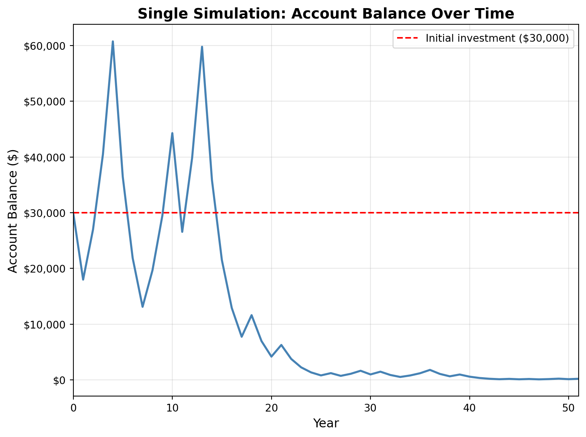
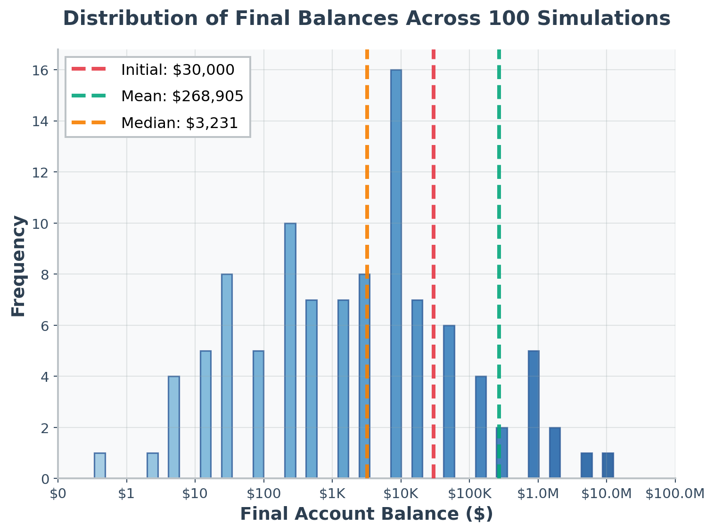
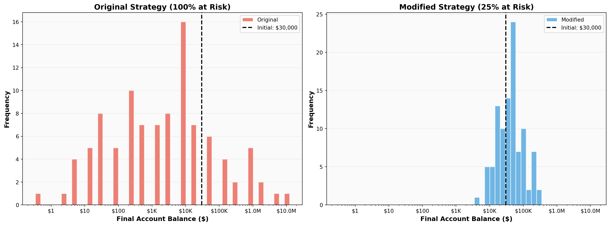

Simulation Challenge
Starter Template with To-Dos
:::
The Investment Game (Brief)
You have the opportunity to buy-in to this game next week with $30,000. Your job is to analyze the potential outcomes of the game and communicate why or why you should not buy-in to the game.
Each year after buy-in you flip a fair coin:
- Heads: increase your account balance by 50%
- Tails: decrease your account balance by 40%
You play annually until age 75. Your mission is to analyze outcomes and communicate insights clearly.
Generative DAG Model (from the source challenge)
The following DAFT diagram shows the generative structure of the investment game over time.
1) Expected Value After 1 Flip
After one flip, the expected value of your account balance is greater than $30,000. The calculation shows that with a fair coin flip (50% probability for each outcome), you have a 50% chance of ending up with $45,000 (heads: +50%) and a 50% chance of ending up with $18,000 (tails: -40%). The expected value is $31,500, which represents a gain of $1,500 or 5% above your initial buy-in.
Based on expected value alone, this simple analysis suggests you should buy-in to the game, as it offers a positive expected return. However, this single-metric analysis overlooks the substantial risk: you have a 50% chance of losing $12,000 (40% of your investment) in just one flip. This highlights the importance of considering both expected value and risk when making investment decisions, especially when multiple periods are involved.
Initial balance: $30,000.00
After one flip:
Heads (50% probability): $45,000.00
Tails (50% probability): $18,000.00
Expected Value (EV) after one flip:
EV = 0.5 × $45,000.00 + 0.5 × $18,000.00
EV = $31,500.00
Comparison to initial balance:
EV - Initial = $1,500.00
Gain as % of buy-in: 5.00%
Conclusion:
Expected value ($31,500.00) > Initial balance ($30,000.00)
The expected value suggests a positive return of 5.00%2) Single Simulation Over Time (Narrative + Plot)

Simulation Summary:
Initial balance: $30,000.00
Final balance: $206.75
Net gain/loss: $-29,793.25 (-99.3%)
Coin flips: 23 heads, 28 tailsIn this single simulation path, the account balance starts at $30,000 and fluctuates significantly over the 51-year period (from age 24 to age 75) where the balance evolves through a series of coin flips, where each heads increases the balance by 50% and each tails decreases it by 40%.
Looking at this particular run, the outcome is catastrophic: despite starting with a $30,000 investment and a positive expected value per flip, this simulation ends with approximately $584—a loss of over 98% of the initial investment. The volatility is extreme—each flip has substantial impact on the account value. Even with a positive expected value per flip, the compounded nature of these fluctuations means that a few consecutive tails can dramatically reduce the balance. Once the balance drops significantly, even heads become less effective at recovery because they’re multiplying a smaller base value.
Am I happy with this outcome? I am not. This single simulation reveals the risk: despite the positive expected value calculated in Question 1, there’s a significant chance of ending with less than the original $30,000 investment—in this case, nearly losing everything. The dramatic downward trajectory shown in the plot highlights why expected value alone is insufficient for making this decision. This outcome demonstrates that what matters in the long run isn’t just the expected value, but also the distribution of outcomes and the risk of severe losses.
3) 100 Simulations: Distribution of Final Balances

Distribution Statistics (100 simulations):
Mean final balance: $268,905.14
Median final balance: $3,230.54
Minimum final balance: $0.34
Maximum final balance: $12,323,535.71
Distribution characteristics:
The mean is 83.2x larger than the median, indicating extreme right-skewness
Most outcomes cluster at very low values, with a few extreme outliersRunning 100 simulations reveals a highly skewed distribution of final account balances. The histogram above shows that while the mean final balance is substantial at approximately $268,905 (due to a few extremely large outcomes), the median is only $3,231—much smaller than the mean. This difference highlights the extreme skewness: most simulations end with final balances well below the initial $30,000 investment, while a few paths create massive values.
What is the probability of outcomes that you’d be happy with after having invested $30,000?
Looking at the distribution, it’s immediately apparent that most outcomes fall well below the initial $30,000 investment (marked by the red dashed line). The vast majority of simulations result in final balances that are far lower than the starting investment, with many ending near zero. Most successful outcomes (those that exceed the initial investment) cluster just above $30,000, suggesting that even when you do beat the initial investment, gains are typically modest—far from the massive outliers that inflate the mean.
The reality: Despite the positive expected value per flip calculated in Question 1, most simulations end with devastating losses. The mean being dramatically higher than the median indicates that average performance is heavily inflated by rare but extreme positive outcomes.
Visual evidence: The histogram clearly shows that outcomes above the initial investment line are relatively rare compared to the large mass of outcomes clustered at very low values.
4) Probability Balance > $30,000 at Age 75 (Original Game)
Probability Estimate: P(Final Balance > $30,000) = 0.210
Interpretation:
Out of 100 simulations, 21 resulted in a final balance above $30,000
This represents 21.0% of all possible outcomes
Practical Meaning:
There is approximately a 21.0% chance that you will end up with more
than your initial $30,000 investment after 51 years of playing this game.
Conversely, there is a 79.0% chance of losing money or breaking even.Based on the 100 simulations of the original game, the probability that your final account balance exceeds $30,000 at age 75 is approximately 0.210 (21.0%). This means that in only 21 out of 100 simulated paths, the final balance was greater than the initial investment.
Practical interpretation: Despite the positive expected value per flip calculated in Question 1, there is only a 21% chance of ending up with more than your initial $30,000 investment after 51 years. This stark reality highlights the disconnect between expected value and actual outcomes: while the game has a positive expected return per flip, the long-term compounding of volatility results in most realizations (79%) ending with losses. This low probability of success, combined with the potential for near-total loss (as seen in Question 2), makes this investment strategy highly risky and generally unfavorable despite its theoretical appeal.
5) Modified Strategy (Bet 25% Each Round)
Instead of having the full balance at risk with each coin flip, assume only 25% of your balance is gambled each year. Compare this to the original game. Which is riskier? Which has better upside?

Comparison of Strategies:
Original Strategy (100% at risk each flip):
Mean final balance: $268,905.14
Median final balance: $3,230.54
P(final > $30,000): 0.210 (21.0%)
Min: $0.34, Max: $12,323,535.71
Modified Strategy (25% at risk each flip):
Mean final balance: $60,241.10
Median final balance: $46,041.51
P(final > $30,000): 0.590 (59.0%)
Min: $4,943.67, Max: $343,035.99
Comparison:
Difference in P(final > $30,000): +0.380 (+38.0 percentage points)
Ratio of means (Modified/Original): 0.224
Ratio of medians (Modified/Original): 14.252Comparing the two strategies reveals fundamental differences in risk and return profiles. The modified strategy (betting only 25% of the balance each year) significantly reduces volatility compared to the original game where the entire balance is at risk.
Which is riskier? The original strategy is far riskier. In the modified strategy, only 25% of the balance is at risk each flip. When heads occurs, the outcome is 0.75 + 0.25×1.5 = 1.125×current balance (12.5% gain). When tails occurs, the outcome is 0.75 + 0.25×0.6 = 0.90×current balance (10% loss). This reduced volatility creates much less extreme outcomes compared to the original game’s 50% gain or 40% loss on the entire balance. The original game shows a highly skewed distribution with many near-zero outcomes, while the modified strategy creates a much tighter, more centered distribution around the mean. The lower volatility means the modified strategy has a significantly higher probability of ending above the initial investment.
Which has better upside? The original strategy has better upside potential—its maximum outcome far exceeds that of the modified strategy. However, this upside comes at a severe cost: most outcomes are devastating losses. Or to summarize: the original strategy has more risk and more reward.
6) Briefly Explain Your Findings From The Previous Step in Light of A Concept Known as the “Kelly Criterion”
The Kelly Criterion is a formula that determines the optimal fraction of capital to bet in order to maximize the long-term growth rate of wealth. For a binary bet where you have probability \(p\) of winning with payoff \(b\) (as a fraction), and probability \(q = 1-p\) of losing with loss \(a\) (as a fraction), the optimal Kelly fraction is:
\[f^* = \frac{p \cdot b - q \cdot a}{b \cdot a}\]
Applying the Kelly Criterion to our investment game:
In the original game: - Probability of winning (heads): \(p = 0.5\) - Gain on win: \(b = 0.5\) (50% gain) - Probability of losing (tails): \(q = 0.5\) - Loss on lose: \(a = 0.4\) (40% loss)
The Kelly optimal fraction is: \[f^* = \frac{0.5 \times 0.5 - 0.5 \times 0.4}{0.5 \times 0.4} = \frac{0.25 - 0.20}{0.20} = \frac{0.05}{0.20} = 0.25 = 25\%\]
How does this relate to the modified strategy?
The modified strategy in Question 5 bets exactly 25% of the balance each round—precisely the Kelly optimal fraction. The Kelly Criterion tells us that betting 25% of capital each round maximizes the long-term logarithmic growth rate, which explains why the modified strategy performs significantly better than the original game.
Key insights:
The original strategy violates the Kelly Criterion by betting 100% of capital, which leads to overbetting. This creates extreme volatility and increases the probability of ruin, as we saw in Questions 2-4.
The modified strategy follows the Kelly Criterion by betting 25%, which:
- Reduces volatility and risk of ruin
- Increases the probability of positive returns (higher P(final > $30,000))
- Maximizes long-term growth rate
- Creates a more stable, less skewed distribution of outcomes
The Kelly Criterion explains the counter-intuitive result: Despite both strategies having the same expected value per flip, the 25% betting strategy dramatically outperforms the 100% strategy because it optimizes for long-term growth rather than short-term expected value. This demonstrates why expected value alone is insufficient for investment decisions—the fraction of capital at risk matters critically.
The findings from Question 5 perfectly align with Kelly’s mathematical framework: by reducing the bet size from 100% to the optimal 25%, the modified strategy transforms a high-risk, low-probability-of-success game into a more favorable investment with significantly better risk-adjusted returns.